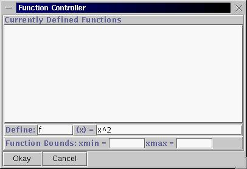
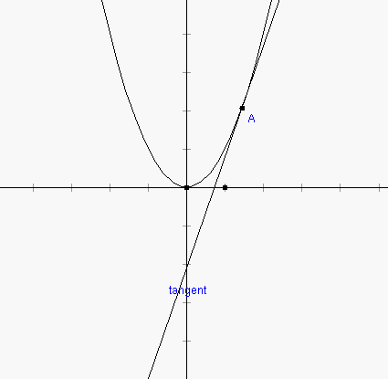
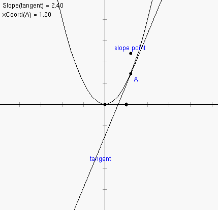
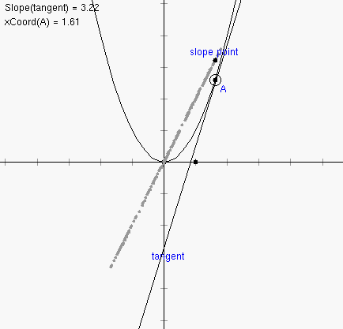

1. Start up Geometry Explorer. Choose "Show Axes" under the "Graph" menu. We will be working with the function f(x) = x^2. We will create the graph of f(x) by choosing "Add Function to Graph..." under the "Graph" menu. A dialog box will pop up which will allow us to define f(x) = x^2. Type in "f" and "x^2" in the two text fields as shown:

2. Once we hit the "Okay" button our function will show up in the main window.
3. Now we will "attach" a point to the graph of this parabola. Click on the point tool (2nd button in first row of buttons labeled "Create") and then click the mouse somewhere on top of the parabola. A point will be created that will always be attached to the parabola, even as we move it around. Next we will create the tangent line to the graph at A. Select point A and then choose "Tangent to Arc/Circle/Function at Point" under the "Misc" menu.

4. Now, we want to analyze the slope of the tangent line to this function. Select the tangent line and then choose "Slope" under the "Measure" menu. Also, select point A and choose "x-coordinate" under the "Measure" menu. We can now consider graphing the pair of values (x-coord(A), slope(tangent)) on the graph as an x-y pair. To do this, select the xCoord and slope measurements in the window (in that order) and select "Add as (x,y) point from Measures" from the "Graph" menu. A new point will be plotted in the coordinate system representing this pair of measurements. This point is called "slope point" below.

5. Drag point A back and forth and notice what happens to the slope point. What type of curve does it seem to trace out? We can actually create a trace for this point. Select the slope point and then choose "Trace On" from the "Edit" menu.

6. Interesting. It looks like the set of slopes for the function f(x) = x^2 is actually on a line. In general the set of slopes for a given function f(x) will itself be a new function which we call the derivative of f(x). In this case the derivative appears to be linear.
7. Try out this same analysis with the function f(x) = sin(x).
What other trigonometric function appears to be the derivative of sin(x)?